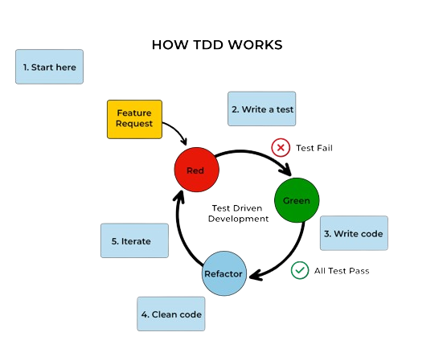

Test-Driven Development (TDD) on tarkvaraarenduse metoodika, mis põhineb lühikestel arendustsüklitel, kus testid kirjutatakse enne arenduskoodi. TDD protsess algab testimisega, seejärel kirjutatakse vajalik arenduskood ja lõpuks tehakse refaktoreerimine.
TDD eesmärk on tagada, et kogu arenduskood on pidevalt testitud ja toimib vastavalt spetsifikatsioonile. See aitab ennetada vigu ja tagab rakenduse stabiilsuse ja usaldusväärsuse.
TDD protsess hõlmab testimise, arendamise ja refaktoreerimise järjestikust kordamist, mis võimaldab arendajatel kontsentreeruda väikestele funktsionaalsustele korraga ja tagada nende nõuetekohane toimimine enne järgmise funktsionaalsuse lisamist.
Üks TDD olulisemaid eeliseid on kiire tagasiside arenduse kvaliteedi kohta, kuna testide tulemused on koheselt nähtavad ja võimaldavad arendajatel kiiresti vigu tuvastada ja parandada.
Lõpuks, Test-Driven Development soodustab ka koodi kvaliteeti ja hooldatavust, kuna testide kirjutamine sunnib arendajaid kirjutama selget, modulaarset ja hästi dokumenteeritud koodi.